Lanceotron¶
Peak Search¶
Summary¶
Peak Search allows you to call peaks from a wig file and classify them based on shape using a machine learning approach. Initially peaks are only called on a single chromosome with no classification. From this, the correct parameters can be chosen, which are used to call and classify peaks on the entire genome. The peaks can then be analysed using various tools, filtered and downloaded as a bed file.
Create the Project¶
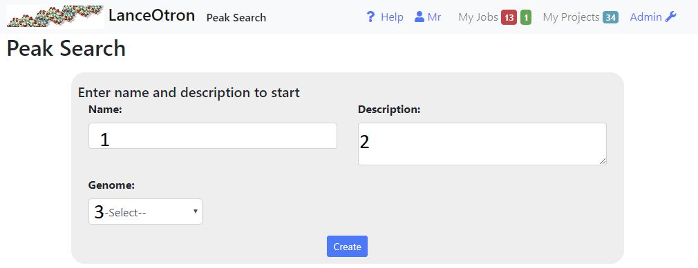- Type the name and description of the project into the inputs (1 and 2 above)
- Select the correct genome from the dropdown box(3). If the required genome is not available, select ‘other’. In this case, certain features will not be avaialable, such as finding the distance to TSSs and annotation intersections.
1.Enter Details¶
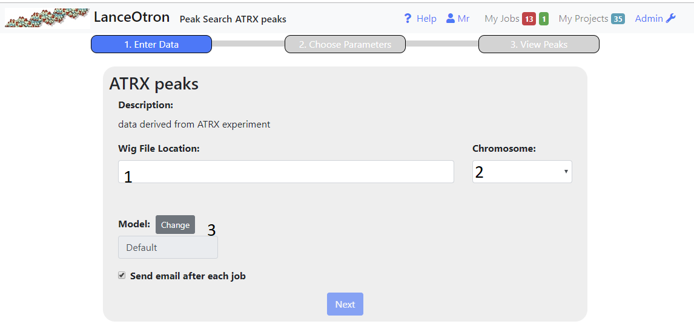- Enter the http address of a publically accessible bigwig file into the text box(1). Once you have pressed enter or lost focus, the path entered will be checked to see if it is indeed a bigwig file and then the chromosomes displayed in the right hand drop down(2) for you to choose from.
- Choose the chromosome from the dropdown(2) for the initial peak calling. Preferably the one you are most familiar with, as this will aid when choosing parmameters in the next step
- Choose the model that will be used to assign peak scores, in most cases the default model will suffice.
- Once you have entered the correct information, the next button should become enabled and you can proceed with the next step. The web page need not be kept open (although it will update once the processing is complete) . If you checked the appropraite box an email will be sent to you when the processing is complete.
2.Choose Parameters¶
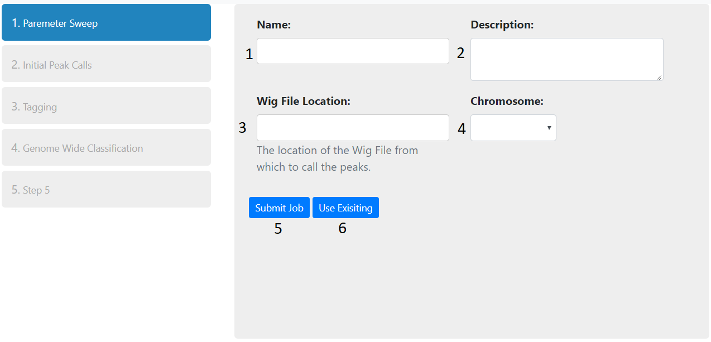Once peaks have been generated for each combination of parameters (threshold and smoothing window) for the chromosome chosen, you can choose which ones to use to call and classify peaks genome wide.
- Using the sliders on the right (1,2) will update the browser showing the peaks called using the selected parameters.Navigate to an area you are familiar with and choose the parameters, which result in sane peak calls. You can only continue when the total peak number is less than 30000.
- smoothing window This is represented by the red line in the browser. The greater the smoothing, the flatter the line becomes, resulting in fewer broader peaks.
- threshold The black horizontal line(4) in the browser represents the threshold. Peaks are called where the smoothing line bisects the threshold. Thus a higher threshold will result in only the taller peaks being called.N.B. When zoomed out in the browser, due ti the nature of bigwig files, peak height is an average of the region and hence where the smoothing line crosses the threshold does not always tally with peaks called (see 5 above) .You will need to zoom in to get a more accurate representation.
- Peak Number This shows the number of peaks that have been called on the chromosome with the parameters selected. You can also use the peak number slider to see the effect this has on the parameters and peak calling (shown in the browser)
- Once you are satisified with the parameters, pressing next will trigger peak calling/classification genome wide. Again, you can navigate away from the page whilst this is ocurring and you will be sent an email when the the process is complete
3. View Peaks¶
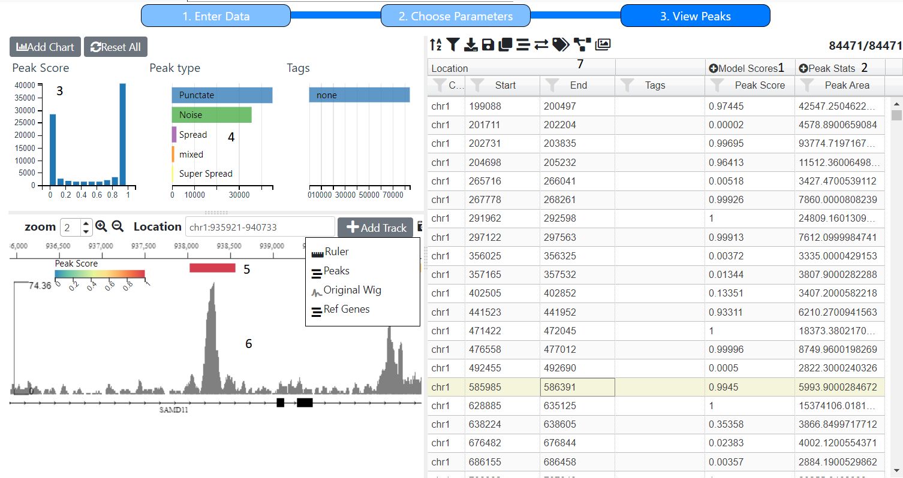The final screen shows a summary of the peaks that were called and the scores that were assigned to them with the model used. The screen is based charts, a table and browser, see Viewing the Data
Model Scores¶
These are the scores assigned by the machine learning model. The Peak Score, shown in the table (1) and histogram (3) is just the sum of all the scores for ‘peaks’, which in the case of the default model is all scores except Noise. Individual peak scores (H3K4me1,TF etc) and peak types can be displayed in the table by clicking on the icon in the Model Scores column (1) which will expand the column.. The Peak Type is calculated using simple rules based on the scores, for example the default uses the following rules:-
- Super Spread if H3K4me1 > 0.5
- Spread if the sum of H3K4me1, H3K4me3 and H3K27ac > 0.5
- Punctate if TF and ATAC > 0.5
- Noise if Noise > 0.5
- Mixed if none of the above apply
Peak Stats¶
For each predicted peak, the width, max height, area and density (area/width) are calculated. To see them all click on the icon in the Peak Width column (2).
Tracks¶
Initially there will be two tracks are the original wig file (6) that was uploaded and the peaks identified (5). Other tracks can be added (see Adding Tracks). The peaks tracks is coloured by the peak score but can this can be altered using the icon in the browser tool bar
Charts¶
Initialy a hostogram of peak socre (3) and row chart of peak types (4) and current Tags are shown, however other charts can be addeed (see Adding a Chart). For example you could create a scatter plot of peak height X peak width.
Clustering¶
In order the peaks will be clustered based on their shapes . The brings up a dialog . You can choose UMAP tSNE or PCA You don’t have to remain on the web page. Once completed, graphs see (mlv- see Scatter Plot) will be added to the as well as columns with the clustering values.Clusters can then be selected by dragging a region
Other¶
You may want peaks you thing are good or bad (see Tagging Locations) These tags can then be used to create a model This can be aided by creating images for all the candidate peaks
Choosing Parameters¶
Processing Peaks¶
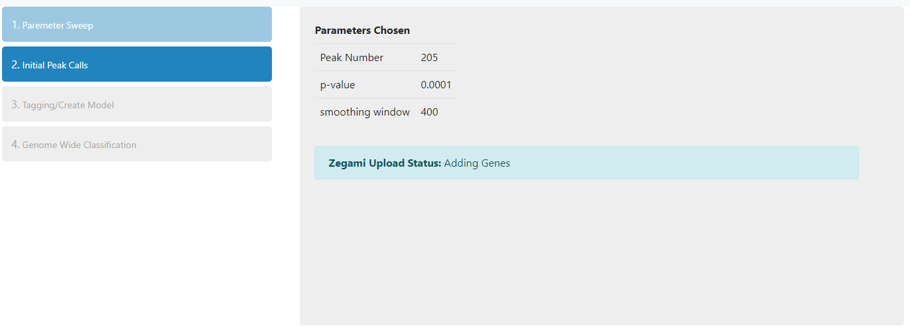Once the parameters have been chosen and submitted, the following steps will be carried out on all the peaks identified on the selected chromosome:-
- Peak statistics (width, height, area) are calculated
- Overlap with any genes, annotations are calculated
- Thumbnail created for each peak
- tSNE and PCA carried out bases on peak shape
- Peaks are classified using the default model and assigned a Peak and Noise score
- Images are uplaoded to Zegami and a collection is created
You will be informed about which stage is currently running. You do not have to remain on the page, but can return to it later to see if all the processing has been completed.
Also, whilst the above is being carried out, peaks for the whole genome (not just the specified chromosome) will be called and classified according to the parameters initially chosen and the default model.
Once processing is complete, you will have access to the Tagging/Create Model and Whole Genome Classification tabs.
TaggingCreating Model¶
Tagging Using MLV¶
Tagging Images¶
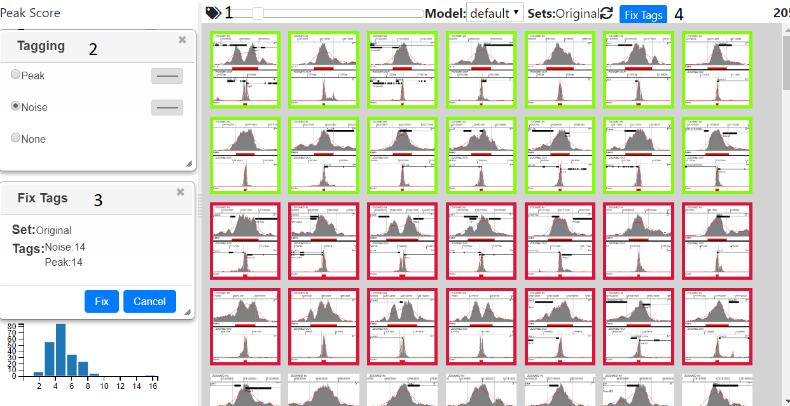Pressing the tag icon (1) will open the tagging dialog (2), now clicking on an image will then tag that image with the tag selected in the dialog’s radio buttons, or remove the tag, if none was selected. Multiple images can be tagged at once, by pressing shift and clicking, which tags all the images between the last and currently tagged item. Closing the tagging dialog will remove the coloured border from the image, but not remove the tags, and the images will become highlighted again once the dialog is reopened.
Tags can be saved at any time using the ‘Save Tags’ button (3). This opens a dialog (4) that shows the current set, which initially will be ‘Original’ and the number and type of tags. Pressing the save button will save/update the tags in the database and if enough tags are present allows a model to be created see Classifying/Generating a Model
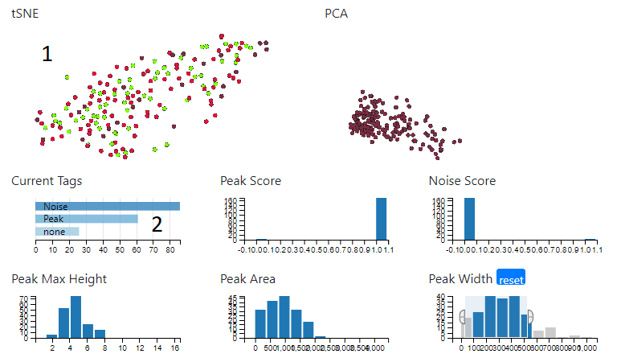When the tagging dialog is open, the tSNE plot (1) will be coloured according to the type of tag. In addition, the ‘Current Tags’ bar chart (2) will show the number and type of tags in the current set. Clicking on a bar will select just those tags.
Tagging Using Zegami¶
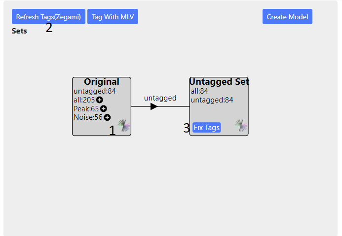On the main project page in the ‘Tagging/Create Model’ tabe, click the Zegami icon to go to the Zegami set (1). You need to login to Zegami first using the link on the page (2) with the correct password/username, otherwise a request error will be shown on the Zegami page. Then tag the sets in Zegami- see the Zegami web site for instructions on how to tag images. When you have finished tagging, you will need to return to the main project page to proceed and press the ‘Get Tags’ button (3). This will update the database with all the tags from Zegami and overwrite any existing onces. Once enough tags have been generated, a model can be created, see Classifying/Generating a Model
Classifying/Generating a Model¶
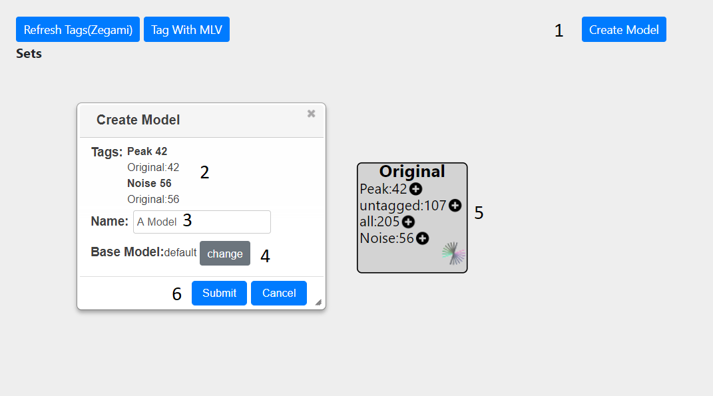Pressing the ‘Create Model’ button (1) will bring up a dialog, showing the number and type of peaks which have been tagged (2) The source of these tags is also shown. In this example, only the original set is present (5) hence all tags are taken from this. If other sets are present, for each peak, the tag will be taken from the last created set, if there is not one present, then the next set will be examined for tag and so on until the original set is reached.
An appropriate name should be given to the model (3). The base model can also be changed from default to a previously created one (4). Finally, the model can be submitted(6) At the top of the screen, a message will show that the model is being created and a dialog will appear to inform you when the job is finished. Once the model has been created you can view it either in Zegami or MLV. The model can then be used to call peaks genome wide.
Viewing in MLV¶
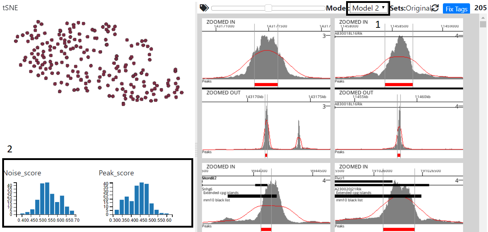Select the model in model dropdown (1) and the Noise,Peak Score graphs will update to reflect the new model
Viewing in Zegami¶
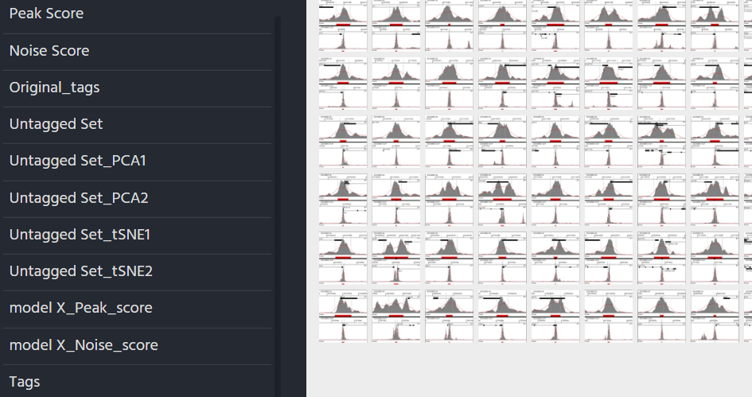For each model created An extra field will be added to the original zegami collection with the title model_name tag score (see above)
Working with Sets¶
In MLV¶
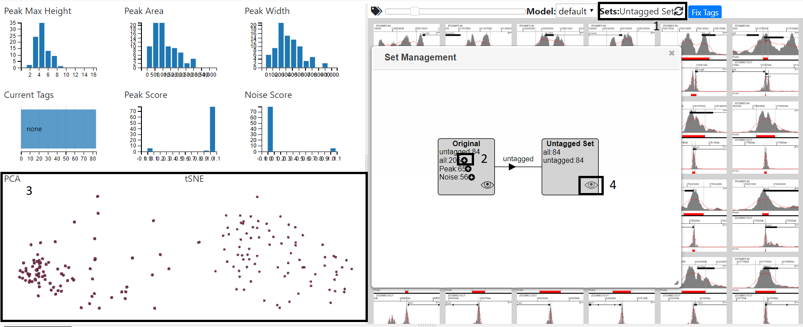The set dialog can be opened by clicking on the sets label (1). Once tags have been fixed, pressing the plus sign next to a tag (2) will create a new set. This may take a while as peaks are re-clustered. Once this is complete the view will automatically change to the reflect the set, with the charts showing the new clustering (3). You can than tag this set and fix the tags in the normal way - see Tagging Using MLV To switch between sets press the eye icon and the graphs and images will update accordingly. As the number of setsexpands, you can zoom (mouse wheel) and pan (mouse drag)in the diagram.
In Zegami¶
Sets can be created in the Tagging/Create Model tab of the main project page. Once tags have been fixed in a set, pressing the plus icon next to a tag will create a set from those tags (see above). Once the set has been created, it can be viewed in Zegami (using the zegami icon in the set), although you may have to wait a while for the set to be processed.

The new zegami collection will consist only of items in the new set and contain extra fields for PCA/tSNE1, which are prefixed with the set name.The set can be tagged and fixed in the normal way Tagging Using Zegami
For each set created, all the fields relevent to the sets (tSNE/PCA, tags) will also be added to the original Zegami collection (prefixed with the set name) allowing comparison between sets
Genome Wide Classification¶
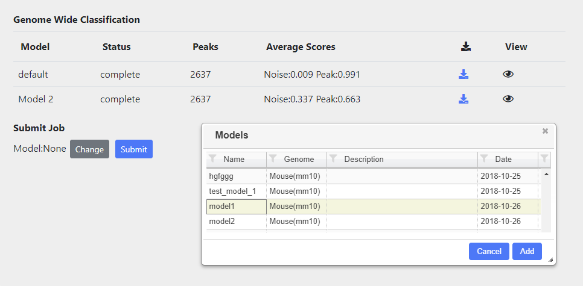Peaks in the whole genome are tagged and classified according to the model chosen. Classification automatically runs for the default model. Other models can also be rub and these can be selected by using the ‘change’ button and then selecting the appropriate model from the table.
All classifications, either running or complete are shown in the table. Once complete the Average scores of each tag submiited will be displayed, as well as icon which allows downloading of a bigbed file containing all the peak calls and associated scores.
You can aslo view the results of the classification in a viewer by presssing the eye icon.